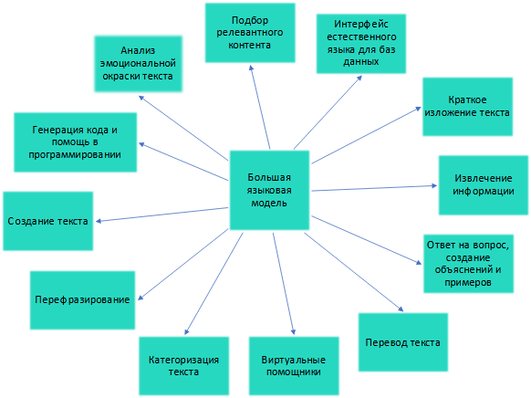

1. Роль языковой модели в RAG-системе
В предыдущих лекциях мы рассмотрели, как подготовить базу знаний с помощью эмбеддингов и как быстро находить в ней релевантные фрагменты с использованием векторных баз данных. Однако поиск документов — это только половина задачи. Найденные фрагменты нужно превратить в связный, понятный и полезный ответ для пользователя. Эту задачу выполняет языковая модель (Large Language Model, LLM).

В архитектуре RAG языковая модель играет роль «генератора». Она получает на вход запрос пользователя и набор релевантных фрагментов текста, который в терминологии RAG называется контекстом. На основе этих входных данных модель формирует финальный ответ, адресованный пользователю. Образно говоря, векторная база данных — это память системы, где хранятся факты, а языковая модель — это её «мозг», который формулирует связную мысль на основе извлечённых фактов, придавая ответу естественную, разговорную форму.
Без языковой модели RAG-система была бы просто поисковиком, выдающим пользователю сырые куски текста. С языковой моделью она становится интеллектуальным ассистентом, способным обобщать информацию из разных источников, переформулировать её, чтобы она лучше отвечала на вопрос, и представлять в удобном для восприятия виде.
2. Типы языковых моделей
При создании RAG-системы разработчик сталкивается с важным выбором: какую языковую модель использовать? Все существующие модели можно разделить на две большие категории, каждая из которых имеет свои преимущества и недостатки.
| Критерий | Проприетарные модели | Открытые модели (open-source) |
|---|---|---|
| Примеры | GPT-4, Claude, Gemini | Llama 2/3, Qwen, Mistral, Gemma |
| Доступ | Через API (платная подписка или pay-as-you-go) | Свободное скачивание, запуск на своих серверах |
| Контроль данных | Низкий — данные отправляются на серверы провайдера | Полный — данные не покидают вашу инфраструктуру |
| Стоимость | Оплата за токены, может быть дорого при большом объёме | Бесплатно (кроме затрат на железо и электричество) |
| Требования к железу | Минимальные — достаточно интернет-соединения | Высокие — нужны мощные GPU (часто ≥24 ГБ видеопамяти) |
| Качество | Очень высокое (особенно у GPT-4 и Claude) | Высокое, быстро догоняет проприетарные |
| Размер контекста | Большой (128K-1M токенов) | От 8K до 128K (зависит от модели) |
| Поддержка русского | Хорошая (GPT-4, Claude понимают русский) | Разная (Qwen понимает хорошо, Llama — среднее) |
| Легкость внедрения | Очень высокая — несколько строк кода | Средняя — требуется настройка окружения (Ollama, vLLM) |
| Конфиденциальность | Нет — данные могут быть использованы для обучения | Да — никуда не отправляются |
Выбор между проприетарными и открытыми моделями зависит от конкретной задачи и контекста. Для быстрого прототипирования и коммерческих проектов, не связанных с обработкой чувствительных данных, удобны облачные API. Для корпоративных решений, работающих с конфиденциальной информацией, предпочтительнее открытые модели, развёрнутые внутри контура компании. В рамках нашего курса мы используем открытую модель Qwen2.5, запускаемую локально через Ollama — это даёт нам полный контроль, отсутствие затрат и гарантию, что наши данные не покидают локальный компьютер.
3. Как передать контекст в модель: промпт-инжиниринг
Языковые модели работают на основе промптов — текстовых инструкций, которые мы им отправляем. В отличие от обычного использования LLM, где мы можем просто задать вопрос, в RAG-системе промпт должен быть сконструирован особым образом. Модель должна понимать, что ей нужно опираться на предоставленные документы, а не на свои внутренние, возможно, устаревшие или обобщённые знания.
Типичная структура RAG-промпта включает несколько обязательных элементов. Первый элемент — системная инструкция, задающая роль модели и правила поведения. Например: «Ты — полезный ассистент, который отвечает на вопросы пользователей, используя только предоставленные фрагменты документов. Не добавляй информацию из своих знаний». Второй элемент — сам контекст, то есть фрагменты текста, найденные векторной базой данных. Третий элемент — исходный вопрос пользователя. Четвёртый элемент — инструкция по формату ответа и, возможно, указание на то, как действовать, если ответ не найден.
Важно правильно оформить промпт, чтобы модель не игнорировала контекст. Исследования показывают, что даже мощные модели могут «галлюцинировать» или опираться на свои внутренние знания, если промпт составлен нечётко. Поэтому в инструкции нужно явно и многократно подчеркнуть: «Используй ТОЛЬКО информацию из предоставленного контекста», «Если в контексте нет ответа на вопрос, ответь, что не знаешь, не придумывай». Некоторые подходы также включают в промпт примеры правильных и неправильных ответов (few-shot learning), что дополнительно обучает модель желаемому поведению.
Искусство составления эффективных промптов называется промпт-инжинирингом, и это важный навык для разработчика RAG-систем. Качество ответа напрямую зависит от того, насколько чётко и полно мы сформулировали инструкцию для модели.
4. Управление длиной контекста
У языковых моделей есть фундаментальное ограничение — окно контекста, то есть максимальная длина входного текста, которую модель может обработать за один раз. Измеряется это ограничение в токенах — единицах, на которые модель разбивает текст. Старые модели могли обрабатывать только несколько тысяч токенов, что соответствует примерно паре страниц текста. Современные модели поддерживают значительно большие окна: GPT-4 Turbo — до 128 тысяч токенов, Claude — до 200 тысяч, а Gemini — до 1 миллиона токенов, что сопоставимо с объёмом романа «Война и мир».
Однако даже большое окно контекста не безразмерно, и есть несколько причин не передавать модели весь контекст, какой только можно. Во-первых, чем больше контекст, тем дороже обработка — как в денежном выражении при использовании API, так и во времени вычислений. Во-вторых, исследования показывают, что модели склонны «забывать» информацию, расположенную в середине длинного контекста, концентрируясь на начале и конце. Таким образом, добавление большого объёма малозначимой информации может даже ухудшить качество ответа.
Поэтому при проектировании RAG-системы важно контролировать, сколько фрагментов мы передаём модели. Обычно из векторной базы данных извлекается от 3 до 10 самых релевантных фрагментов. Если их суммарная длина превышает окно контекста модели или просто слишком велика, применяют стратегии сокращения: уменьшают количество фрагментов, обрезают слишком длинные фрагменты до разумного предела (например, первые 500 символов), или сначала суммаризируют каждый фрагмент с помощью другой, более лёгкой модели. На практике чаще всего достаточно просто ограничить количество фрагментов, так как первые несколько результатов обычно содержат основную информацию, необходимую для ответа.
5. Обработка ситуации «ответ не найден»
Одна из главных проблем языковых моделей — склонность к галлюцинациям, то есть генерации уверенных, но фактически ложных ответов на вопросы, на которые модель не знает правильного ответа. RAG призван снизить эту проблему, предоставляя модели факты из документов. Однако полностью исключить галлюцинации не удаётся, особенно в ситуациях, когда в базе знаний действительно нет информации, необходимой для ответа.
В такой ситуации модель может попытаться «додумать» ответ, опираясь на свои внутренние знания, особенно если промпт не запрещает этого явно. Это может привести к тому, что пользователь получит правдоподобно звучащий, но неверный ответ, что крайне нежелательно, особенно в профессиональных или медицинских приложениях.
Чтобы избежать ложных ответов, применяется комплекс мер. Первая и самая важная — добавление в промпт специальных инструкций: «Если в предоставленном контексте нет ответа на вопрос, чётко скажи: „Извините, информация отсутствует в базе знаний“». Однако даже с такой инструкцией мощные модели иногда всё равно пытаются угадать. Для повышения надёжности можно использовать эвристики на уровне системы: если оценка релевантности всех найденных фрагментов (например, косинусное сходство) ниже определённого порога, лучше вообще не передавать их модели и сразу отвечать, что информация не найдена. Некоторые продвинутые системы также используют дополнительные модели-верификаторы, которые проверяют, действительно ли ответ, сгенерированный LLM, содержится в предоставленном контексте.
В нашем курсе мы реализуем базовую, но эффективную стратегию: в промпте явно запрещаем модели отвечать, если ответа нет в контексте, и также передаём инструкцию отвечать на русском языке, так как наша база знаний на русском.
6. Асинхронность и производительность
В реальных приложениях пользователи ожидают, что RAG-система будет отвечать быстро — желательно за 1-2 секунды, иначе впечатление от работы с сервисом ухудшается. Поиск в векторной базе данных обычно происходит очень быстро, за миллисекунды. А вот вызов языковой модели может занимать значительное время — от долей секунды у лёгких моделей до нескольких секунд или даже десятков секунд у больших моделей или при использовании удалённого API с задержками сети.
Для повышения производительности применяется несколько подходов. Первый — асинхронные вызовы. Вместо того чтобы блокировать выполнение программы в ожидании ответа от модели, мы отправляем запрос асинхронно и продолжаем выполнять другие задачи. В контексте веб-приложения это позволяет серверу обрабатывать другие запросы, пока один пользователь ждёт ответа от LLM.
Второй подход — кэширование. Ответы на часто задаваемые вопросы можно сохранять в кэше (например, в Redis или просто в оперативной памяти). При повторном поступлении того же вопроса ответ возвращается из кэша за миллисекунды, без вызова LLM. В нашем курсе мы реализуем простой, но эффективный механизм кэширования на основе MD5-хэша вопроса.
Третий подход — выбор подходящей модели. Для простых вопросов, где не требуется глубокая логика, можно использовать более лёгкую и быструю модель, оставляя тяжёлые модели только для сложных случаев. Этот подход называется «маршрутизация запросов». Также можно использовать техники оптимизации самой модели, такие как квантование (уменьшение точности весов для ускорения работы) и батчинг (объединение нескольких запросов в один пакет для эффективной обработки на GPU).
7. Ссылки на источники
Одно из важнейших преимуществ RAG-систем перед обычными большими языковыми моделями — возможность показать пользователю, откуда была взята информация, использованная для генерации ответа. Это повышает доверие к системе, позволяет пользователю проверить факты самостоятельно и обратиться к первоисточнику для более глубокого изучения вопроса.
Для реализации ссылок на источники необходимо сохранять привязку каждого фрагмента текста к метаданным исходного документа: имени файла, URL, дате создания и т.д. Когда модель генерирует ответ, система знает, какие именно фрагменты были переданы в контексте. Существует несколько способов представить эти источники пользователю.
Первый и самый простой способ — после ответа модели просто вывести список документов, фрагменты из которых были использованы. Это легко реализовать и надёжно. Второй способ — явно попросить модель в ответе указывать номера источников, например: «Согласно документу [1], ...». Однако на практике модели часто ошибаются в нумерации или забывают указывать источники, поэтому требуется тщательная настройка промпта и постобработка ответа. Третий, наиболее продвинутый способ — использовать методологию «цитирования с проверкой» (citation with verification): модель генерирует ответ, а затем отдельный алгоритм проверяет, действительно ли каждое утверждение в ответе содержится в одном из источников, и добавляет соответствующую ссылку.
В рамках нашего курса мы реализуем первый подход: после генерации ответа показываем пользователю раскрывающийся блок «Источники», в котором перечислены файлы, использованные при ответе. Это просто, надёжно и даёт пользователю всю необходимую информацию.
Вопросы для самоконтроля
- Какую роль выполняет языковая модель в RAG-системе?
- В чём разница между проприетарными и открытыми моделями? Какие плюсы и минусы у каждого подхода?
- Из каких частей состоит типичный RAG-промпт?
- Как заставить модель не галлюцинировать, если ответ не найден в контексте?
- Какие способы ускорения работы с языковыми моделями существуют?
- Почему важно показывать пользователю источники информации?